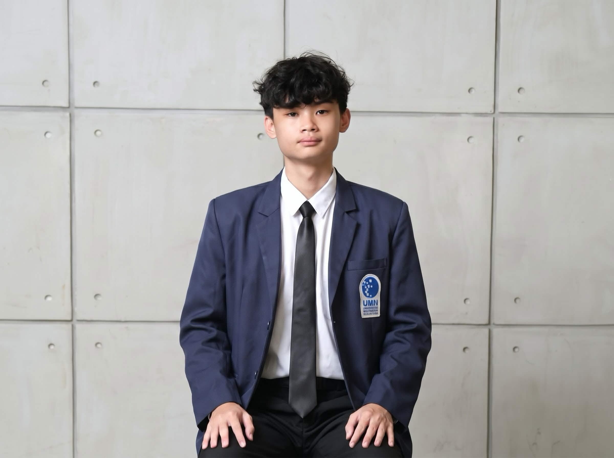

Visual storytelling rooted in ethical reporting, field camera operation, and broadcast-ready production.
Digital Journalism student and Director of Photography with a primary focus on camera operation, videography, and photojournalism. Skilled in capturing visual narratives, field audio, and fast-paced event documentation, with practical experience in offline editing. Quick to adapt to new technical setups and on-the-spot problem-solving, eager to contribute audio-visual and mobile journalism skills to a broadcast media house and live radio production workflows.

Universitas Multimedia Nusantara (UMN)
AUG 2024 – PRESENTFocus on investigative journalism ethics, broadcast camera operation, field reporting, and newsroom workflows.
SMA Katolik St. Louis 1 Surabaya
JUL 2021 – JUN 2024A catalogue of field assignments, broadcast media, and video productions. Click any project to inspect full footage, behind-the-scenes documentation, and production notes.
Director of Photography & Production Strategist
- Run multi-camera broadcast setups for VIP and diplomatic podcast productions with ambassadors and politicians.
- Manage wireless lavalier microphones and field audio on set.
- Plan and execute lighting for high-profile interviews.
- Produce behind-the-scenes short-form reels for digital channels.
Mobile Journalist / Reporter
- Produced vertical short-form news stories on mobile rigs with shotgun microphones.
- Edited in CapCut for rapid newsroom deployment.
- Completed the workshop and earned the MoJo certification.
Documentation Committee Member & Offline Editor
- Covered the event in photo and video for MCs, participants and brand sponsors.
- Cut the opening video and closing recap offline under strict deadlines.
Director of Photography & Lighting Director
- Shot and edited the cinematic teaser and trailer videos.
- Colour-graded cast portraits for the official posters.
- Designed and called real-time stage lighting cues during live performances.
Central Event Committee (Broadcasting)
- Managed a simulated-live stream to YouTube through OBS Studio.
- Streamed the opening and closing ceremonies for 539+ participants.